Software Delivery

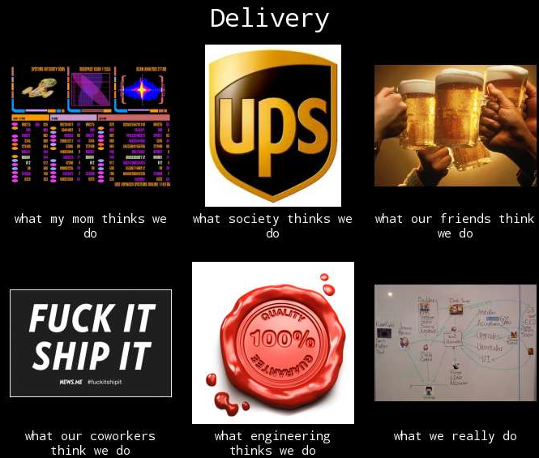
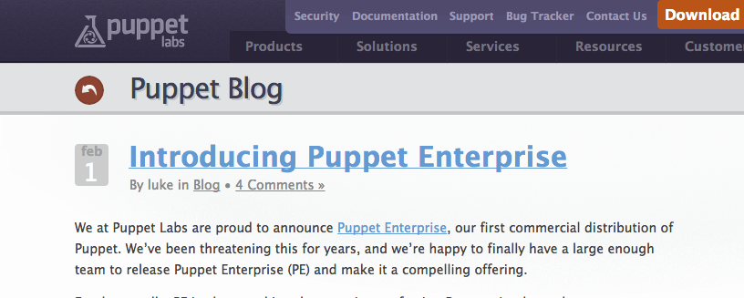
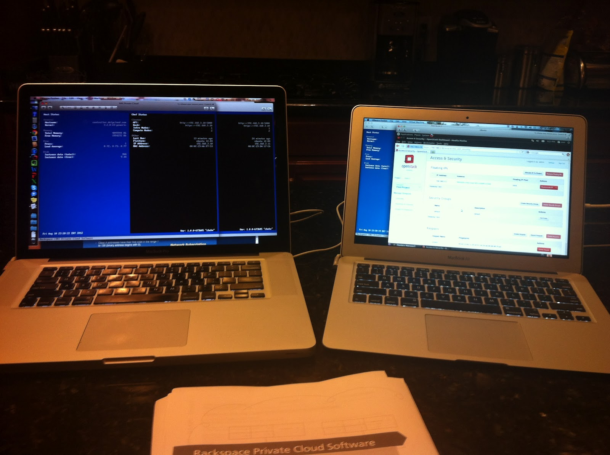
Puppet Enterprise at 1.0
- EL 5
- 10.04
- 5
Puppet Enterprise at 1.1
added
- EL 4
- EL 6
- 11
- 10
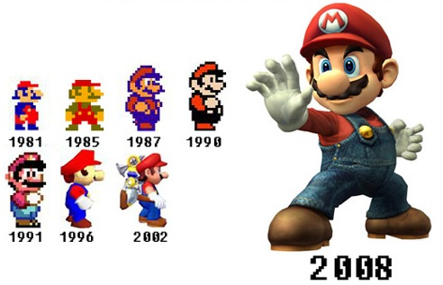
Real infrastrcture improvements
1.2, 2.0 and 2.5 Puppet Enterprise
New Platforms, new versions, new features
Real FOSS packages

Jenkins on internet
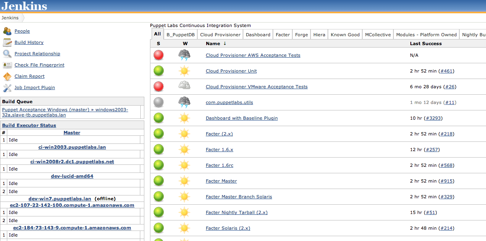
First real pipeline workflows starting to form
Hired Moses...and later Branan
Then Scott
4/7 of team converted from Internship

Build, Measure, Learn
Value Stream RepresentationPE - largest and most time consuming Platform - Fastest moving Forge/Module - involvment growing
SQA Mission:
SQA provides tooling, frameworks, training and infrastructure to make developers more efficient and better at testing our software.
SQA
Tests PE end-to-end Exploratory testing Pipeline automation Scale testing Prevent regression Owns Quality We all own quality 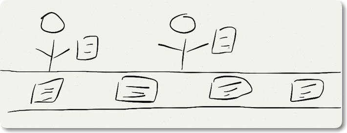
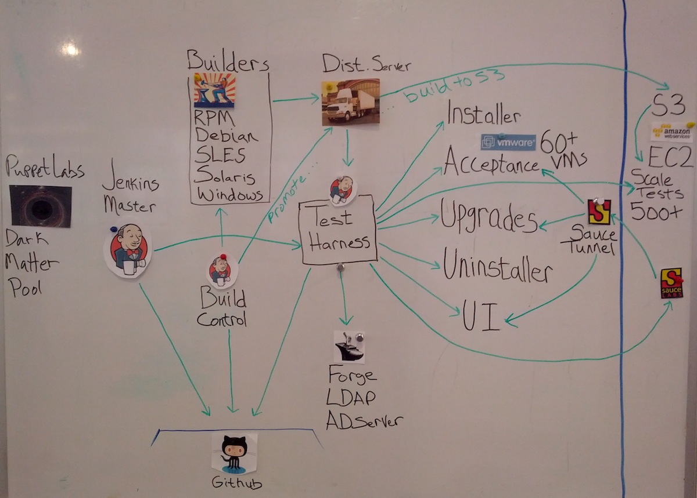
Jenkins
538 jobs in past week
Each job touches multiple infrastructure points (between 1-30)
60+ VM hosts for testing
75 PE jobs
143 FOSS jobs
Millions of combinations for testing
Release Engineering: We create a quality and repeatable experience for deployment of our software products and services.
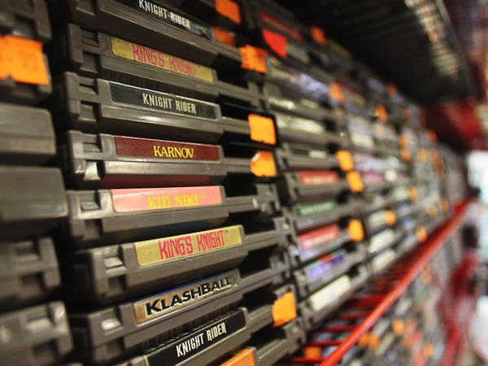
Current projects
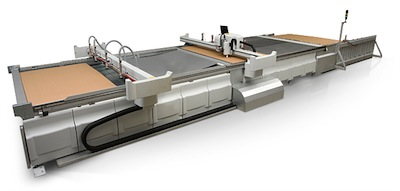
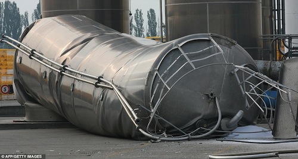
Quality: Are our users happy?
Are they recommending our software, our repos, our testing methodologies?
Are they recommending our software, our repos, our testing methodologies?
Thanks for the time. I hope you learned a bit about what we do
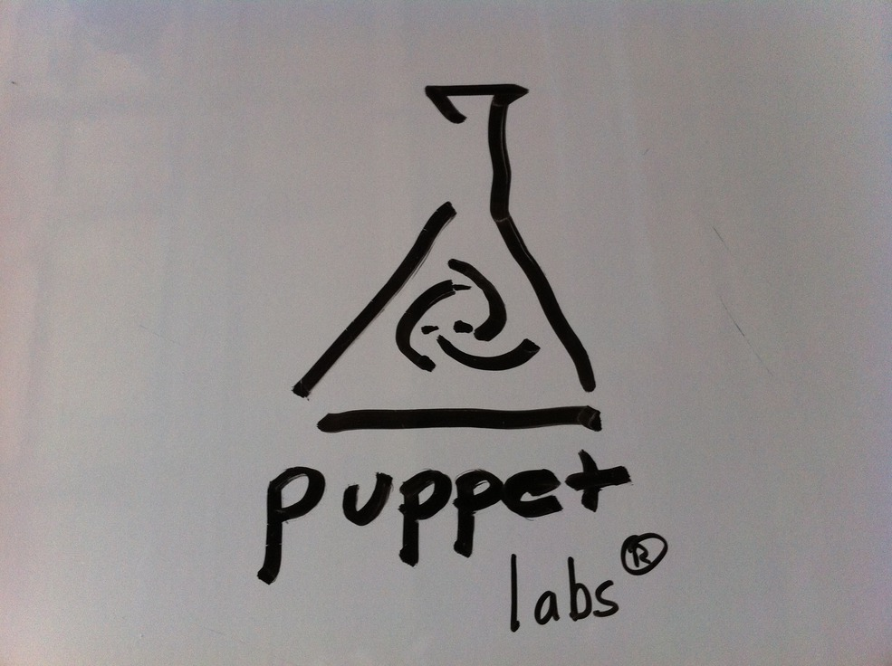